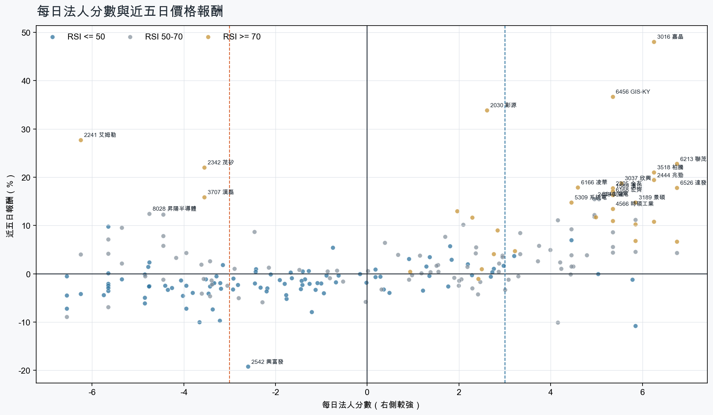
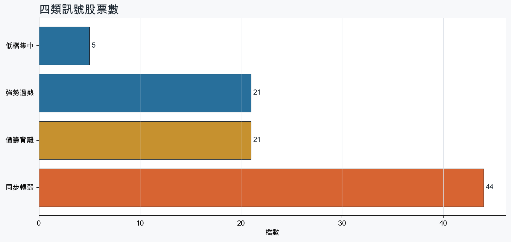
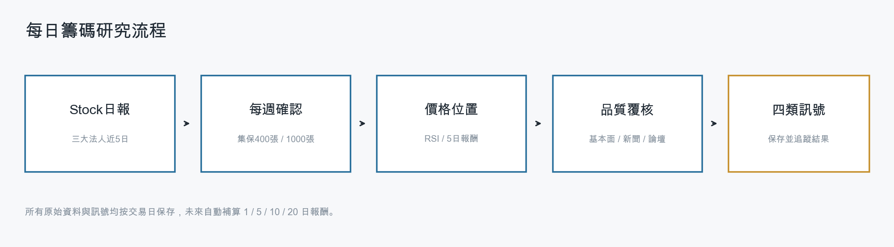
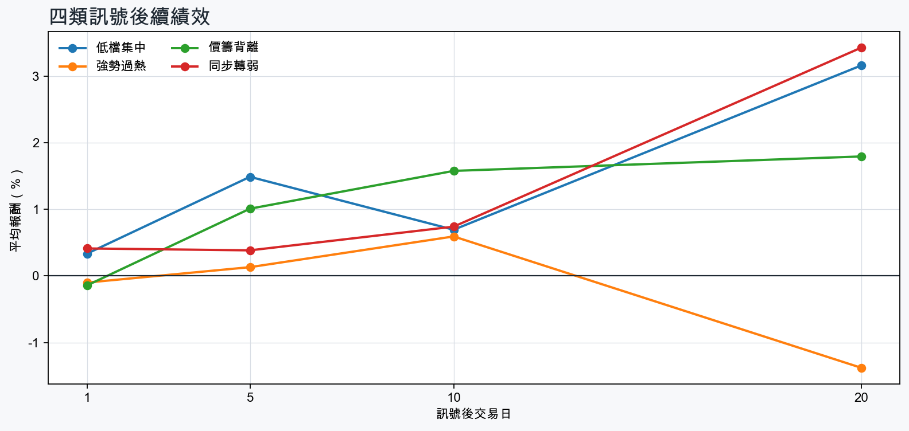

市場情緒中性分歧
近5日法人合計+1,030,238 張
篩選池上漲比例51.8%
籌碼好 / RSI低5 檔
籌碼差 / 價跌15 檔



EPS × PE VALUATION
法人常用的相對估值
顯示保守、基準與樂觀估值帶，不把單一數字包裝成精準目標價。
最新累計 EPS 依季數年化 × 同產業有效 P/E 的 Q25／中位數／Q75。排除本公司、非正 P/E，並以 1.5×IQR 排除離群值。估值帶是公開資料篩選值，不是法人目標價；未使用分析師預估 EPS。
MOOD × MONEY
情緒與籌碼雷達
熱度代表被討論程度；情緒分與法人方向分開計算。熱門不等於適合追價，樣本不足也不硬判多空。
| 股票 | 情緒 | 討論熱度 | 情緒 × 籌碼 | 情緒 × 基本面 |
|---|---|---|---|---|
| 2368 金像電價籌背離 | 情緒高漲 +64.2信心 78 | 1001 篇 / 58 留言 / 3 則新聞 | 熱門但法人撤退法人分 -5.7 | 基本面與情緒共振基本面分 +3.6 |
| 3037 欣興強勢過熱 | 情緒高漲 +47.6信心 80 | 941 篇 / 41 留言 / 3 則新聞 | 情籌共振法人分 +5.5 | 基本面與情緒共振基本面分 +3.6 |
| 2324 仁寶同步轉弱 | 偏多 +17.2信心 61 | 841 篇 / 22 留言 / 3 則新聞 | 情籌混合法人分 -5.8 | 基本面與情緒分歧基本面分 +3.0 |
| 4763 材料*-KY同步轉弱 | 中性分歧 +0.0信心 30 | 540 篇 / 0 留言 / 3 則新聞 | 情籌混合法人分 -6.5 | 基本面與情緒分歧基本面分 +1.8 |
| 2489 瑞軒同步轉弱 | 中性分歧 +0.0信心 30 | 540 篇 / 0 留言 / 3 則新聞 | 情籌混合法人分 -5.7 | 基本面與情緒分歧基本面分 +3.0 |
| 3260 威剛同步轉弱 | 偏多 +29.7信心 30 | 540 篇 / 0 留言 / 3 則新聞 | 熱門但法人撤退法人分 -4.8 | 基本面與情緒共振基本面分 +3.6 |
| 3450 聯鈞同步轉弱 | 中性分歧 +0.0信心 30 | 540 篇 / 0 留言 / 3 則新聞 | 情籌混合法人分 -5.7 | 基本面與情緒分歧基本面分 +3.6 |
| 4979 華星光同步轉弱 | 中性分歧 +0.0信心 30 | 540 篇 / 0 留言 / 3 則新聞 | 情籌混合法人分 -4.0 | 基本面與情緒分歧基本面分 +3.6 |
| 2464 盟立同步轉弱 | 偏多 +29.7信心 30 | 540 篇 / 0 留言 / 3 則新聞 | 熱門但法人撤退法人分 -4.8 | 基本面與情緒共振基本面分 +3.0 |
| 3707 漢磊價籌背離 | 中性分歧 +0.0信心 30 | 540 篇 / 0 留言 / 3 則新聞 | 情籌混合法人分 -3.5 | 基本面與情緒分歧基本面分 -0.2 |
| 8028 昇陽半導體價籌背離 | 中性分歧 +0.0信心 30 | 540 篇 / 0 留言 / 3 則新聞 | 情籌混合法人分 -4.8 | 基本面與情緒分歧基本面分 +3.6 |
| 8039 台虹價籌背離 | 中性分歧 +0.0信心 30 | 540 篇 / 0 留言 / 3 則新聞 | 情籌混合法人分 -4.8 | 基本面與情緒分歧基本面分 -0.1 |
01
籌碼好 / RSI低
優先研究基本面；法人續買且價格止穩時，才適合分批觀察。
| 股票 / 確認狀態 | 每日法人分 | 浦男式近似 | 法人加速度 | RSI / 相對強弱 | 量價確認 | 融資融券 | 每週集保確認 | 基本面 | EPS × 同業 P/E 估值 | 情緒 / 情籌 | 近期消息 | 論壇討論 |
|---|---|---|---|---|---|---|---|---|---|---|---|---|
| 3221 台嘉碩可研究 · 100 分籌碼與價格確認，可列研究清單 | +4.5法人 +1,723 張 / 3 天 | 接近 · 85站上月線；法人籌碼偏多；法人買盤加速；留意中期均線未翻多 | +277 張近3日 +1,095 / 連續 +1 日 | 48.6相對大盤 +1.3% | 量比 2.28確認分 +4.820日線低於60日線 | +2.1%融資 +73 張 / 融券 -5 張 | -0.06 pp1000張 +1.02 pp | 單月營收年增 +28.7%；累計營收年增 +15.0%；2026 Q2 累計 EPS 0.822026 Q2 累計營益率 6.5%來源：公開資訊觀測站 | 基準 NT$ 34.78估值帶 23.62–63.30現價 50.80 · 估值帶內 · 距基準 -31.5%2026 Q2 累計 EPS 0.82 → 年化 1.64通信網路同業 P/E 14.40／21.21／38.60 · n=58 · 信心中等以 Q2 累計 EPS 年化，不等同分析師全年預估來源：TWSE／TPEx 每日本益比 | 樣本不足 +0.0熱度 0 / 信心 0情緒樣本不足 | 近期沒有通過股票語境篩選的新聞 | 近期沒有明確提及本股的論壇樣本 |
| 2351 順德等待確認 · 82 分籌碼有訊號，但價格尚未確認 | +5.8法人 +3,341 張 / 4 天 | 接近 · 61中期均線偏多；法人籌碼偏多；法人買盤加速；留意未站月線、明顯弱於大盤 | +3,851 張近3日 +3,561 / 連續 +4 日 | 40.9相對大盤 -12.8% | 量比 0.60確認分 -0.8收盤跌破20日線；近20日弱於大盤；成交量不足 | -%融資 - 張 / 融券 - 張 | +1.90 pp1000張 +2.65 pp | 單月營收年增 +61.2%；累計營收年增 +32.5%；2026 Q2 累計 EPS 2.82仍需觀察下一期財報延續性來源：公開資訊觀測站 | 基準 NT$ 155.7估值帶 101.8–272.7現價 215.5 · 估值帶內 · 距基準 -27.8%2026 Q2 累計 EPS 2.82 → 年化 5.64半導體同業 P/E 18.04／27.60／48.35 · n=148 · 信心中等以 Q2 累計 EPS 年化，不等同分析師全年預估來源：TWSE／TPEx 每日本益比 | 偏多 +29.7熱度 54 / 信心 30情籌共振 | 【優分析即時新聞】順德(2351)第二季毛利率翻倍至20.7%，AI導線架放量、前8月營收創同期新高today.line.me · 09/29【順德法說會重點內容備忘錄】未來展望趨勢 20260825富果直送 · 08/25 | 近期沒有明確提及本股的論壇樣本 |
| 1513 中興電可研究 · 89 分籌碼與價格確認，可列研究清單 | +5.0法人 +2,862 張 / 5 天 | 接近 · 85站上月線；中期均線偏多；法人籌碼偏多；留意明顯弱於大盤 | +292 張近3日 +1,814 / 連續 +8 日 | 50.0相對大盤 -3.4% | 量比 0.99確認分 +2.4近20日弱於大盤 | -%融資 - 張 / 融券 - 張 | +0.33 pp1000張 +0.75 pp | 單月營收年增 +8.9%；累計營收年增 +4.2%；2026 Q2 累計 EPS 4.50仍需觀察下一期財報延續性來源：公開資訊觀測站 | 基準 NT$ 185.4估值帶 122.4–290.8現價 167.0 · 估值帶內 · 距基準 +11.0%2026 Q2 累計 EPS 4.50 → 年化 9.00電機機械同業 P/E 13.60／20.60／32.31 · n=72 · 信心中等以 Q2 累計 EPS 年化，不等同分析師全年預估來源：TWSE／TPEx 每日本益比 | 樣本不足 +0.0熱度 32 / 信心 10情緒樣本不足 | 欣興洗產地疑雲、中興電被捲司法案件！財經專家解答「為何股價還能起飛」：資本市場最後還是回到利益Yahoo股市 · 09/25 | 近期沒有明確提及本股的論壇樣本 |
| 5608 四維航等待確認 · 66 分籌碼有訊號，但價格尚未確認 | +5.8法人 +3,435 張 / 5 天 | 接近 · 58中期均線偏多；法人籌碼偏多；買超具延續性；留意未站月線、法人買盤未加速 | -1,760 張近3日 +997 / 連續 +9 日 | 38.0相對大盤 -2.8% | 量比 0.58確認分 -3.5收盤跌破20日線；成交量不足；法人買盤減速 | -%融資 - 張 / 融券 - 張 | +1.16 pp1000張 +2.70 pp | 單月營收年增 +39.1%；累計營收年增 +13.9%；2026 Q2 累計 EPS 0.32仍需觀察下一期財報延續性來源：公開資訊觀測站 | 不適用年化 EPS 與交易所近四季 EPS 差異過大，可能有股本調整或一次性損益 | 樣本不足 +0.0熱度 0 / 信心 0情緒樣本不足 | 近期沒有通過股票語境篩選的新聞 | 近期沒有明確提及本股的論壇樣本 |
| 2367 燿華等待確認 · 48 分先等基本面止穩 | +3.2法人 +1,676 張 / 5 天 | 未命中 · 48站上月線；法人籌碼偏多；買超具延續性；留意中期均線未翻多、法人買盤未加速 | -400 張近3日 +718 / 連續 +6 日 | 49.0相對大盤 -8.5% | 量比 0.79確認分 -2.520日線低於60日線；近20日弱於大盤；法人買盤減速 | -%融資 - 張 / 融券 - 張 | +0.42 pp1000張 +0.59 pp | 單月營收年增 +26.1%累計營收年增 -0.1%；2026 Q2 累計 EPS -0.64；2026 Q2 累計營益率 -6.5%來源：公開資訊觀測站 | 不適用年化 EPS 非正數，不適合使用本益比估值 | 樣本不足 +0.0熱度 0 / 信心 0情緒樣本不足 | 近期沒有通過股票語境篩選的新聞 | 近期沒有明確提及本股的論壇樣本 |
02
籌碼好 / RSI高
趨勢強但不追價，等待量縮、RSI降溫或回測支撐。
| 股票 / 確認狀態 | 每日法人分 | 浦男式近似 | 法人加速度 | RSI / 相對強弱 | 量價確認 | 融資融券 | 每週集保確認 | 基本面 | EPS × 同業 P/E 估值 | 情緒 / 情籌 | 近期消息 | 論壇討論 |
|---|---|---|---|---|---|---|---|---|---|---|---|---|
| 3016 嘉晶等待拉回 · 100 分等拉回，不追價 | +6.2法人 +26,276 張 / 5 天 | 接近 · 80站上月線；中期均線偏多；法人籌碼偏多；留意量能異常、RSI過熱 | +8,727 張近3日 +17,378 / 連續 +5 日 | 94.4相對大盤 +70.4% | 量比 4.01確認分 +5.3價格、量能與籌碼未見明顯弱項 | -%融資 - 張 / 融券 - 張 | +4.65 pp1000張 +4.44 pp | 單月營收年增 +57.8%；累計營收年增 +34.7%；2026 Q2 累計 EPS 1.00仍需觀察下一期財報延續性來源：公開資訊觀測站 | 基準 NT$ 55.28估值帶 36.20–97.34現價 172.5 · 高於估值帶 · 距基準 -68.0%2026 Q2 累計 EPS 1.00 → 年化 2.00半導體同業 P/E 18.10／27.64／48.67 · n=149 · 信心中等以 Q2 累計 EPS 年化，不等同分析師全年預估來源：TWSE／TPEx 每日本益比 | 偏多 +29.7熱度 54 / 信心 30情籌共振 | 嘉晶做什麼的？股價翻18倍創新天價，矽光子擴4倍仍不夠賣！bnext.com.tw · 09/29嘉晶GaN業務轉盈6吋供不應求/8吋已小量產- 新聞MoneyDJ · 09/29 | 近期沒有明確提及本股的論壇樣本 |
| 3293 鈊象等待拉回 · 100 分等拉回，不追價 | +5.8法人 +5,239 張 / 4 天 | 接近 · 80站上月線；法人籌碼偏多；法人買盤加速；留意中期均線未翻多、RSI過熱 | +4,198 張近3日 +4,700 / 連續 +4 日 | 79.0相對大盤 +7.4% | 量比 1.19確認分 +6.920日線低於60日線 | -10.0%融資 -256 張 / 融券 +3 張 | +1.13 pp1000張 +0.82 pp | 單月營收年增 +24.8%；累計營收年增 +18.1%；2026 Q2 累計 EPS 22.77仍需觀察下一期財報延續性來源：公開資訊觀測站 | 基準 NT$ 646.2估值帶 502.8–1,374現價 779.0 · 估值帶內 · 距基準 -17.1%2026 Q2 累計 EPS 22.77 → 年化 45.54文化創意同業 P/E 11.04／14.19／30.17 · n=14 · 信心中等以 Q2 累計 EPS 年化，不等同分析師全年預估來源：TWSE／TPEx 每日本益比 | 中性分歧 +0.0熱度 54 / 信心 30情籌混合 | 3293 鈊象 - 自我紀錄用 - 股市爆料同學會CMoney · 09/293293 鈊象- 最新的法說會與產業數據，基本面、籌碼面與技術面的全面解析- 股市爆料同學會CMoney · 09/28 | 近期沒有明確提及本股的論壇樣本 |
| 1560 中砂等待拉回 · 100 分等拉回，不追價 | +6.8法人 +2,900 張 / 5 天 | 接近 · 80站上月線；中期均線偏多；法人籌碼偏多；留意量能異常、RSI過熱 | +24 張近3日 +1,450 / 連續 +5 日 | 78.8相對大盤 +34.8% | 量比 0.52確認分 +3.4成交量不足 | -%融資 - 張 / 融券 - 張 | +1.53 pp1000張 +0.79 pp | 單月營收年增 +30.4%；累計營收年增 +24.5%；2026 Q2 累計 EPS 6.44仍需觀察下一期財報延續性來源：公開資訊觀測站 | 基準 NT$ 258.0估值帶 175.2–386.3現價 956.0 · 高於估值帶 · 距基準 -73.0%2026 Q2 累計 EPS 6.44 → 年化 12.88電機機械同業 P/E 13.60／20.03／29.99 · n=72 · 信心中等以 Q2 累計 EPS 年化，不等同分析師全年預估來源：TWSE／TPEx 每日本益比 | 中性分歧 +0.0熱度 54 / 信心 30情籌混合 | 台積電法說前先卡位？中砂先漲、昇陽半、台特化逆勢強分析師揭資金輪動路線- 上市櫃旺得富理財網 · 09/29龍頭被分開狙擊的一週、利空鈍化正在發生、中砂與聯電的2 奈米× 矽光子新故事，加上宏致法說-韭菜叔叔CMoney投資網誌 · 09/29 | 近期沒有明確提及本股的論壇樣本 |
| 6526 達發等待拉回 · 100 分等拉回，不追價 | +6.8法人 +4,757 張 / 5 天 | 接近 · 83站上月線；中期均線偏多；法人籌碼偏多；留意法人買盤未加速、RSI過熱 | -1,000 張近3日 +2,384 / 連續 +7 日 | 80.8相對大盤 +28.5% | 量比 1.23確認分 +2.5法人買盤減速 | -%融資 - 張 / 融券 - 張 | +2.45 pp1000張 +0.44 pp | 單月營收年增 +26.1%；累計營收年增 +12.5%；2026 Q2 累計 EPS 9.72仍需觀察下一期財報延續性來源：公開資訊觀測站 | 基準 NT$ 536.5估值帶 350.7–946.7現價 814.0 · 估值帶內 · 距基準 -34.1%2026 Q2 累計 EPS 9.72 → 年化 19.44半導體同業 P/E 18.04／27.60／48.70 · n=148 · 信心中等以 Q2 累計 EPS 年化，不等同分析師全年預估來源：TWSE／TPEx 每日本益比 | 中性分歧 +0.0熱度 54 / 信心 30情籌混合 | 6526 達發- 證交所9/24完成282檔新權證發行申請案審核- 股市爆料同學會CMoney · 09/29《半導體》注意股：達發 近5日漲33.55%富聯網 · 09/29 | 近期沒有明確提及本股的論壇樣本 |
| 8050 廣積等待拉回 · 100 分等拉回，不追價 | +6.2法人 +4,193 張 / 5 天 | 接近 · 70站上月線；法人籌碼偏多；法人買盤加速；留意中期均線未翻多、量能異常 | +2,694 張近3日 +3,558 / 連續 +10 日 | 83.7相對大盤 +13.7% | 量比 4.75確認分 +5.320日線低於60日線 | -0.2%融資 -7 張 / 融券 +1 張 | +0.93 pp1000張 +0.40 pp | 單月營收年增 +94.5%；累計營收年增 +17.6%；2026 Q2 累計 EPS 2.692026 Q2 累計營益率 5.8%來源：公開資訊觀測站 | 基準 NT$ 88.66估值帶 66.93–129.7現價 65.70 · 低於估值帶 · 距基準 +35.0%2026 Q2 累計 EPS 2.69 → 年化 5.38電腦及週邊同業 P/E 12.44／16.48／24.11 · n=78 · 信心較低以 Q2 累計 EPS 年化，不等同分析師全年預估；年化 EPS 為交易所近四季 EPS 的 2.05 倍，需保守解讀來源：TWSE／TPEx 每日本益比 | 樣本不足 +9.9熱度 32 / 信心 10情緒樣本不足 | 【10:58 即時新聞】廣積(8050)股價走強，工業電腦訂單動能受關注CMoney投資網誌 · 09/29 | 近期沒有明確提及本股的論壇樣本 |
| 3717 聯嘉投控等待拉回 · 93 分等拉回，不追價 | +5.3法人 +3,493 張 / 4 天 | 接近 · 68站上月線；法人籌碼偏多；買超具延續性；留意中期均線未翻多、法人買盤未加速 | -3,923 張近3日 +2,065 / 連續 +1 日 | 79.1相對大盤 +17.0% | 量比 2.75確認分 +1.820日線低於60日線；法人買盤減速 | -%融資 - 張 / 融券 - 張 | +2.25 pp1000張 +4.16 pp | 單月營收年增 +10.0%；累計營收年增 +891.3%；2026 Q2 累計 EPS 1.152026 Q2 累計營益率 7.7%來源：公開資訊觀測站 | 不適用年化 EPS 與交易所近四季 EPS 差異過大，可能有股本調整或一次性損益 | 偏多 +29.7熱度 54 / 信心 30情籌共振 | 焦點股》聯嘉投控：前8月營收暴增891％ 墨西哥新廠第4季量產自由財經 · 09/293717 聯嘉投控- ㄏㄨˇㄏㄨˇ反指標你還在嗎? - 股市爆料同學會CMoney · 09/29 | 近期沒有明確提及本股的論壇樣本 |
| 3035 智原等待拉回 · 94 分等拉回，不追價 | +5.8法人 +6,301 張 / 4 天 | 命中 · 85站上月線；中期均線偏多；法人籌碼偏多；留意法人買盤未加速、動能位置非最佳 | -3,398 張近3日 +2,811 / 連續 +2 日 | 74.6相對大盤 +13.5% | 量比 1.75確認分 +2.5法人買盤減速 | -%融資 - 張 / 融券 - 張 | +2.60 pp1000張 +3.48 pp | 單月營收年增 +29.9%；2026 Q2 累計 EPS 1.16累計營收年增 -41.1%；2026 Q2 累計營益率 6.2%來源：公開資訊觀測站 | 基準 NT$ 64.03估值帶 41.85–112.2現價 210.0 · 高於估值帶 · 距基準 -69.5%2026 Q2 累計 EPS 1.16 → 年化 2.32半導體同業 P/E 18.04／27.60／48.35 · n=148 · 信心中等以 Q2 累計 EPS 年化，不等同分析師全年預估來源：TWSE／TPEx 每日本益比 | 樣本不足 +0.0熱度 32 / 信心 10情緒樣本不足 | 3035 智原- 只能說看好就抱牢不要被版面影響- 股市爆料同學會CMoney · 09/28 | 近期沒有明確提及本股的論壇樣本 |
| 4566 時碩工業等待拉回 · 100 分等拉回，不追價 | +5.3法人 +3,670 張 / 4 天 | 接近 · 76站上月線；法人籌碼偏多；法人買盤加速；留意中期均線未翻多、量能異常 | +3,604 張近3日 +3,644 / 連續 +3 日 | 74.0相對大盤 +8.6% | 量比 4.45確認分 +5.320日線低於60日線 | -%融資 - 張 / 融券 - 張 | -0.78 pp1000張 -1.32 pp | 單月營收年增 +53.9%；累計營收年增 +20.5%；2026 Q2 累計 EPS 0.992026 Q2 累計營益率 4.3%來源：公開資訊觀測站 | 基準 NT$ 39.66估值帶 26.93–63.97現價 73.20 · 高於估值帶 · 距基準 -45.8%2026 Q2 累計 EPS 0.99 → 年化 1.98電機機械同業 P/E 13.60／20.03／32.31 · n=72 · 信心中等以 Q2 累計 EPS 年化，不等同分析師全年預估來源：TWSE／TPEx 每日本益比 | 樣本不足 +0.0熱度 0 / 信心 0情緒樣本不足 | 近期沒有通過股票語境篩選的新聞 | 近期沒有明確提及本股的論壇樣本 |
| 6168 宏齊等待拉回 · 89 分等拉回，不追價 | +5.3法人 +13,706 張 / 4 天 | 接近 · 69站上月線；中期均線偏多；法人籌碼偏多；留意法人買盤未加速、量能異常 | -19,936 張近3日 -1,035 / 連續 +2 日 | 81.3相對大盤 +53.9% | 量比 0.42確認分 +1.1成交量不足；法人買盤減速 | -%融資 - 張 / 融券 - 張 | +8.66 pp1000張 +9.43 pp | 單月營收年增 +18.5%；累計營收年增 +9.3%；2026 Q2 累計 EPS 0.172026 Q2 累計營益率 -0.4%來源：公開資訊觀測站 | 基準 NT$ 8.00估值帶 4.41–12.97現價 45.20 · 高於估值帶 · 距基準 -82.3%2026 Q2 累計 EPS 0.17 → 年化 0.34光電同業 P/E 12.96／23.52／38.16 · n=70 · 信心中等以 Q2 累計 EPS 年化，不等同分析師全年預估來源：TWSE／TPEx 每日本益比 | 樣本不足 +0.0熱度 0 / 信心 0情緒樣本不足 | 近期沒有通過股票語境篩選的新聞 | 近期沒有明確提及本股的論壇樣本 |
| 3037 欣興等待拉回 · 82 分等拉回，不追價 | +5.5法人 +15,155 張 / 4 天 | 接近 · 68站上月線；中期均線偏多；法人籌碼偏多；留意法人買盤未加速、量能異常 | -4,710 張近3日 +7,264 / 連續 -1 日 | 78.1相對大盤 +2.1% | 量比 0.52確認分 -0.3成交量不足；法人買盤減速 | -%融資 - 張 / 融券 - 張 | +1.11 pp1000張 +1.38 pp | 單月營收年增 +56.3%；累計營收年增 +34.2%；2026 Q2 累計 EPS 11.70仍需觀察下一期財報延續性來源：公開資訊觀測站 | 基準 NT$ 609.1估值帶 419.6–1,022現價 1,165 · 高於估值帶 · 距基準 -47.7%2026 Q2 累計 EPS 11.70 → 年化 23.40電子零組件同業 P/E 17.93／26.03／43.67 · n=150 · 信心中等以 Q2 累計 EPS 年化，不等同分析師全年預估來源：TWSE／TPEx 每日本益比 | 情緒高漲 +47.6熱度 94 / 信心 80情籌共振 | 欣興、南電、景碩…ABF三雄誰能搶下過半市占？金控法人估它EPS連3年翻倍喊出天價輾壓外資圈- 上市櫃旺得富理財網 · 09/29ABF、PCB需求升級欣興、景碩、南電等載板廠擴產搶商機- 日報工商時報 · 09/29 | [新聞] ABF產能爆發拚2027年衝40%！欣興周線飆PTT Stock · 09-29 · 41 留言 |
| 3189 景碩等待拉回 · 85 分等拉回，不追價 | +5.8法人 +19,903 張 / 4 天 | 命中 · 84站上月線；中期均線偏多；法人籌碼偏多；留意法人買盤未加速、量能尚未確認 | -809 張近3日 +11,134 / 連續 +4 日 | 74.3相對大盤 +3.4% | 量比 0.79確認分 +0.7法人買盤減速 | -%融資 - 張 / 融券 - 張 | +0.01 pp1000張 -0.58 pp | 單月營收年增 +40.6%；累計營收年增 +32.1%；2026 Q2 累計 EPS 3.74仍需觀察下一期財報延續性來源：公開資訊觀測站 | 基準 NT$ 206.8估值帶 135.4–364.1現價 955.0 · 高於估值帶 · 距基準 -78.3%2026 Q2 累計 EPS 3.74 → 年化 7.48半導體同業 P/E 18.10／27.64／48.67 · n=149 · 信心中等以 Q2 累計 EPS 年化，不等同分析師全年預估來源：TWSE／TPEx 每日本益比 | 中性分歧 +0.0熱度 54 / 信心 30情籌混合 | 欣興、南電、景碩…ABF三雄誰能搶下過半市占？金控法人估它EPS連3年翻倍喊出天價輾壓外資圈- 上市櫃旺得富理財網 · 09/293189 景碩- 00991A一次買齊ABF三雄！ - 股市爆料同學會CMoney · 09/29 | 近期沒有明確提及本股的論壇樣本 |
| 2305 全友等待拉回 · 93 分等拉回，不追價 | +5.3法人 +2,854 張 / 4 天 | 接近 · 73站上月線；中期均線偏多；法人籌碼偏多；留意法人買盤未加速、量能異常 | -3,627 張近3日 +853 / 連續 +2 日 | 97.1相對大盤 +135.5% | 量比 0.32確認分 +1.1成交量不足；法人買盤減速 | -%融資 - 張 / 融券 - 張 | +3.28 pp1000張 +4.27 pp | 單月營收年增 +240.0%；累計營收年增 +113.2%；2026 Q2 累計 EPS 0.51仍需觀察下一期財報延續性來源：公開資訊觀測站 | 基準 NT$ 16.81估值帶 12.69–24.59現價 69.10 · 高於估值帶 · 距基準 -75.7%2026 Q2 累計 EPS 0.51 → 年化 1.02電腦及週邊同業 P/E 12.44／16.48／24.11 · n=78 · 信心中等以 Q2 累計 EPS 年化，不等同分析師全年預估來源：TWSE／TPEx 每日本益比 | 中性分歧 +0.0熱度 45 / 信心 20情籌混合 | 【11:00 即時新聞】全友(2305)盤中續漲，光通訊轉型與列入處置成焦點CMoney投資網誌 · 09/29全友(2305)走勢分析(20260925)CMoney · 09/27 | 近期沒有明確提及本股的論壇樣本 |
| 6166 凌華等待拉回 · 99 分等拉回，不追價 | +4.6法人 +1,766 張 / 4 天 | 接近 · 86站上月線；法人籌碼偏多；法人買盤加速；留意中期均線未翻多、動能位置非最佳 | +67 張近3日 +886 / 連續 +2 日 | 76.4相對大盤 +13.1% | 量比 2.40確認分 +4.920日線低於60日線 | -%融資 - 張 / 融券 - 張 | -1.79 pp1000張 -1.19 pp | 單月營收年增 +47.8%；累計營收年增 +41.6%；2026 Q2 累計 EPS 3.12仍需觀察下一期財報延續性來源：公開資訊觀測站 | 基準 NT$ 102.8估值帶 77.63–150.4現價 135.0 · 估值帶內 · 距基準 -23.8%2026 Q2 累計 EPS 3.12 → 年化 6.24電腦及週邊同業 P/E 12.44／16.48／24.11 · n=78 · 信心中等以 Q2 累計 EPS 年化，不等同分析師全年預估來源：TWSE／TPEx 每日本益比 | 樣本不足 +0.0熱度 0 / 信心 0情緒樣本不足 | 近期沒有通過股票語境篩選的新聞 | 近期沒有明確提及本股的論壇樣本 |
| 2444 兆勁等待拉回 · 96 分等拉回，不追價 | +6.2法人 +1,652 張 / 5 天 | 接近 · 69站上月線；中期均線偏多；法人籌碼偏多；留意法人買盤未加速、基本面偏弱 | -26 張近3日 +819 / 連續 +7 日 | 77.1相對大盤 +34.0% | 量比 1.50確認分 +4.2法人買盤減速；流動性偏低 | -%融資 - 張 / 融券 - 張 | +3.86 pp1000張 +3.81 pp | 單月營收年增 +49.3%累計營收年增 -16.8%；2026 Q2 累計 EPS -1.35；2026 Q2 累計營益率 -31.7%來源：公開資訊觀測站 | 不適用年化 EPS 非正數，不適合使用本益比估值 | 樣本不足 +0.0熱度 0 / 信心 0情緒樣本不足 | 近期沒有通過股票語境篩選的新聞 | 近期沒有明確提及本股的論壇樣本 |
| 6213 聯茂等待拉回 · 87 分等拉回，不追價 | +6.8法人 +10,391 張 / 5 天 | 命中 · 89站上月線；中期均線偏多；法人籌碼偏多；留意法人買盤未加速、動能位置非最佳 | -9,048 張近3日 +2,466 / 連續 +6 日 | 71.0相對大盤 +3.7% | 量比 1.67確認分 +1.4法人買盤減速 | -%融資 - 張 / 融券 - 張 | -3.15 pp1000張 -4.31 pp | 單月營收年增 +97.9%；累計營收年增 +42.2%；2026 Q2 累計 EPS 4.39仍需觀察下一期財報延續性來源：公開資訊觀測站 | 基準 NT$ 228.5估值帶 157.4–383.4現價 620.0 · 高於估值帶 · 距基準 -63.1%2026 Q2 累計 EPS 4.39 → 年化 8.78電子零組件同業 P/E 17.93／26.03／43.67 · n=150 · 信心中等以 Q2 累計 EPS 年化，不等同分析師全年預估來源：TWSE／TPEx 每日本益比 | 中性分歧 +0.0熱度 54 / 信心 30情籌混合 | 【09/29券商評等報告彙整】聯茂(6213) 今日僅1家券商發布績效評等報告，評價為看多，目標價為780元。CMoney · 09/29【12:50 即時新聞】聯茂(6213)盤中走強，AI高階CCL題材續成焦點CMoney投資網誌 · 09/29 | 近期沒有明確提及本股的論壇樣本 |
03
籌碼差 / 股價上漲
可能是事件行情或軋空；沒有籌碼改善前避免追高。
| 股票 / 確認狀態 | 每日法人分 | 浦男式近似 | 法人加速度 | RSI / 相對強弱 | 量價確認 | 融資融券 | 每週集保確認 | 基本面 | EPS × 同業 P/E 估值 | 情緒 / 情籌 | 近期消息 | 論壇討論 |
|---|---|---|---|---|---|---|---|---|---|---|---|---|
| 2241 艾姆勒風險警示 · 54 分背離警戒，避免追高 | -6.2法人 -2,466 張 / 0 天 | 未命中 · 57站上月線；中期均線偏多；法人買盤加速；留意法人籌碼偏弱、買超延續不足 | +208 張近3日 -1,038 / 連續 -5 日 | 87.3相對大盤 +21.1% | 量比 2.39確認分 +6.5價格、量能與籌碼未見明顯弱項 | -%融資 - 張 / 融券 - 張 | -1.01 pp1000張 -1.88 pp | 單月營收年增 +47.3%；累計營收年增 +46.5%2026 Q2 累計 EPS -0.42；2026 Q2 累計營益率 -8.3%來源：公開資訊觀測站 | 不適用年化 EPS 非正數，不適合使用本益比估值 | 樣本不足 +0.0熱度 0 / 信心 0情緒樣本不足 | 近期沒有通過股票語境篩選的新聞 | 近期沒有明確提及本股的論壇樣本 |
| 2342 茂矽風險警示 · 43 分背離警戒，避免追高 | -3.5法人 -5,153 張 / 3 天 | 未命中 · 51站上月線；中期均線偏多；買超具延續性；留意法人籌碼偏弱、法人買盤未加速 | -8,288 張近3日 -6,452 / 連續 -2 日 | 76.5相對大盤 +20.7% | 量比 4.38確認分 +1.4法人買盤減速 | -%融資 - 張 / 融券 - 張 | +3.79 pp1000張 +1.90 pp | 單月營收年增 +4.0%累計營收年增 -3.1%；2026 Q2 累計 EPS -0.23；2026 Q2 累計營益率 -4.7%來源：公開資訊觀測站 | 不適用年化 EPS 非正數，不適合使用本益比估值 | 偏多 +19.8熱度 45 / 信心 20情籌混合 | 【12:44 即時新聞】茂矽(2342)股價穩步走強，短線技術與籌碼成盤中焦點CMoney投資網誌 · 09/29茂矽營收連三個月回升，9月突然多了「AI電力」新故事理財周刊 · 09/23 | 近期沒有明確提及本股的論壇樣本 |
| 3707 漢磊風險警示 · 47 分背離警戒，避免追高 | -3.5法人 -7,462 張 / 3 天 | 未命中 · 51站上月線；買超具延續性；明顯強於大盤；留意中期均線未翻多、法人籌碼偏弱 | -9,218 張近3日 -8,068 / 連續 -1 日 | 74.3相對大盤 +11.5% | 量比 2.16確認分 +2.520日線低於60日線；法人買盤減速 | +0.9%融資 +130 張 / 融券 +45 張 | +0.09 pp1000張 -0.68 pp | 單月營收年增 +29.5%；累計營收年增 +26.4%2026 Q2 累計 EPS -0.57；2026 Q2 累計營益率 -2.2%來源：公開資訊觀測站 | 不適用年化 EPS 非正數，不適合使用本益比估值 | 中性分歧 +0.0熱度 54 / 信心 30情籌混合 | 個股：漢磊(3707)10/7受邀參加凱基證券舉辦之法人說明會富聯網 · 09/29《半導體》漢磊10月7日受邀凱基證券法說會富聯網 · 09/29 | 近期沒有明確提及本股的論壇樣本 |
| 8028 昇陽半導體風險警示 · 62 分背離警戒，避免追高 | -4.8法人 -6,478 張 / 2 天 | 接近 · 62站上月線；法人買盤加速；明顯強於大盤；留意中期均線未翻多、法人籌碼偏弱 | +6,474 張近3日 +203 / 連續 +2 日 | 68.5相對大盤 +13.3% | 量比 3.18確認分 +5.320日線低於60日線 | -%融資 - 張 / 融券 - 張 | -1.57 pp1000張 -3.32 pp | 單月營收年增 +25.6%；累計營收年增 +29.1%；2026 Q2 累計 EPS 3.32仍需觀察下一期財報延續性來源：公開資訊觀測站 | 基準 NT$ 183.3估值帶 119.8–321.0現價 289.0 · 估值帶內 · 距基準 -36.6%2026 Q2 累計 EPS 3.32 → 年化 6.64半導體同業 P/E 18.04／27.60／48.35 · n=148 · 信心中等以 Q2 累計 EPS 年化，不等同分析師全年預估來源：TWSE／TPEx 每日本益比 | 中性分歧 +0.0熱度 54 / 信心 30情籌混合 | 昇陽半導體(8028)股價短線急漲 18.4%！如何用金包銀提早發現？-Sara WangCMoney投資網誌 · 09/29【10:18 即時新聞】昇陽半導體(8028)盤中強攻近9% 聚焦晶背供電再生晶圓題材CMoney投資網誌 · 09/29 | 近期沒有明確提及本股的論壇樣本 |
| 1709 和益風險警示 · 54 分背離警戒，避免追高 | -4.5法人 -16,446 張 / 2 天 | 接近 · 75站上月線；中期均線偏多；明顯強於大盤；留意法人籌碼偏弱、法人買盤未加速 | -9,287 張近3日 -19,582 / 連續 +1 日 | 66.3相對大盤 +18.9% | 量比 1.03確認分 +2.5法人買盤減速 | -%融資 - 張 / 融券 - 張 | +0.02 pp1000張 +0.55 pp | 單月營收年增 +82.7%；累計營收年增 +22.3%；2026 Q2 累計 EPS 1.30仍需觀察下一期財報延續性來源：公開資訊觀測站 | 基準 NT$ 48.02估值帶 34.68–67.91現價 44.00 · 估值帶內 · 距基準 +9.1%2026 Q2 累計 EPS 1.30 → 年化 2.60化學工業同業 P/E 13.34／18.47／26.12 · n=32 · 信心中等以 Q2 累計 EPS 年化，不等同分析師全年預估來源：TWSE／TPEx 每日本益比 | 樣本不足 +0.0熱度 0 / 信心 0情緒樣本不足 | 近期沒有通過股票語境篩選的新聞 | 近期沒有明確提及本股的論壇樣本 |
| 2406 國碩風險警示 · 53 分背離警戒，避免追高 | -5.3法人 -5,442 張 / 1 天 | 接近 · 67站上月線；法人買盤加速；相對大盤偏強；留意中期均線未翻多、法人籌碼偏弱 | +2,546 張近3日 -1,423 / 連續 -4 日 | 68.3相對大盤 +3.0% | 量比 0.92確認分 +3.720日線低於60日線 | -%融資 - 張 / 融券 - 張 | -1.06 pp1000張 -0.90 pp | 單月營收年增 +86.1%；累計營收年增 +114.9%；2026 Q2 累計 EPS 0.332026 Q2 累計營益率 4.9%來源：公開資訊觀測站 | 基準 NT$ 15.52估值帶 8.55–25.19現價 30.30 · 高於估值帶 · 距基準 -48.8%2026 Q2 累計 EPS 0.33 → 年化 0.66光電同業 P/E 12.96／23.52／38.16 · n=70 · 信心較低以 Q2 累計 EPS 年化，不等同分析師全年預估；年化 EPS 為交易所近四季 EPS 的 3.67 倍，需保守解讀來源：TWSE／TPEx 每日本益比 | 樣本不足 +0.0熱度 32 / 信心 10情緒樣本不足 | 熱門股》主力進場大買 國碩衝漲停自由時報 · 09/22 | 近期沒有明確提及本股的論壇樣本 |
| 2368 金像電風險警示 · 46 分背離警戒，避免追高 | -5.7法人 -5,363 張 / 1 天 | 接近 · 67站上月線；中期均線偏多；法人買盤加速；留意法人籌碼偏弱、買超延續不足 | +145 張近3日 -2,048 / 連續 -2 日 | 50.0相對大盤 -3.7% | 量比 1.01確認分 +1.9近20日弱於大盤 | -%融資 - 張 / 融券 - 張 | +0.00 pp1000張 +0.26 pp | 單月營收年增 +76.4%；累計營收年增 +71.2%；2026 Q2 累計 EPS 16.17仍需觀察下一期財報延續性來源：公開資訊觀測站 | 基準 NT$ 841.8估值帶 579.9–1,427現價 1,120 · 估值帶內 · 距基準 -24.8%2026 Q2 累計 EPS 16.17 → 年化 32.34電子零組件同業 P/E 17.93／26.03／44.11 · n=150 · 信心中等以 Q2 累計 EPS 年化，不等同分析師全年預估來源：TWSE／TPEx 每日本益比 | 情緒高漲 +64.2熱度 100 / 信心 78熱門但法人撤退 | 兩檔台股ETF換股了！00981T剔除創意、金像電、南電UDN · 09/29金像電私募名單赫見「貝佐斯」！亞馬遜砸近16億元入股79億擴產同步啟動| 財經Newtalk新聞 · 09/29 | [情報] Amazon私募認購2368金像電PTT Stock · 09-29 · 58 留言 |
| 3645 達邁風險警示 · 11 分背離警戒，避免追高 | -4.5法人 -2,129 張 / 2 天 | 未命中 · 32站上月線；動能強但未過熱；流動性足夠；留意中期均線未翻多、法人籌碼偏弱 | -1,782 張近3日 -1,970 / 連續 +1 日 | 52.4相對大盤 -7.9% | 量比 0.59確認分 -2.820日線低於60日線；近20日弱於大盤；成交量不足；法人買盤減速 | -%融資 - 張 / 融券 - 張 | -6.14 pp1000張 -9.02 pp | 2026 Q2 累計 EPS 1.52；2026 Q2 累計營益率 21.3%單月營收年增 -11.0%；累計營收年增 -2.7%來源：公開資訊觀測站 | 基準 NT$ 79.13估值帶 54.51–134.1現價 72.70 · 估值帶內 · 距基準 +8.8%2026 Q2 累計 EPS 1.52 → 年化 3.04電子零組件同業 P/E 17.93／26.03／44.11 · n=150 · 信心中等以 Q2 累計 EPS 年化，不等同分析師全年預估來源：TWSE／TPEx 每日本益比 | 樣本不足 +0.0熱度 0 / 信心 0情緒樣本不足 | 近期沒有通過股票語境篩選的新聞 | 近期沒有明確提及本股的論壇樣本 |
| 6443 元晶風險警示 · 36 分背離警戒，避免追高 | -4.5法人 -12,068 張 / 2 天 | 未命中 · 42站上月線；法人買盤加速；相對大盤偏強；留意中期均線未翻多、法人籌碼偏弱 | +5,987 張近3日 -2,273 / 連續 +1 日 | 64.5相對大盤 +0.4% | 量比 0.49確認分 +3.220日線低於60日線；成交量不足 | -%融資 - 張 / 融券 - 張 | -1.85 pp1000張 -1.69 pp | 尚無明確成長訊號單月營收年增 -23.0%；累計營收年增 -36.2%；2026 Q2 累計 EPS -0.60來源：公開資訊觀測站 | 不適用年化 EPS 非正數，不適合使用本益比估值 | 樣本不足 +0.0熱度 32 / 信心 10情緒樣本不足 | 元晶營收比去年大減，股價近期大漲，在漲什麼？理財周刊 · 09/24 | 近期沒有明確提及本股的論壇樣本 |
| 4919 新唐風險警示 · 36 分背離警戒，避免追高 | -5.7法人 -15,872 張 / 1 天 | 未命中 · 50站上月線；明顯強於大盤；量價健康；留意中期均線未翻多、法人籌碼偏弱 | -2,284 張近3日 -9,238 / 連續 -3 日 | 64.8相對大盤 +7.8% | 量比 1.18確認分 +2.520日線低於60日線；法人買盤減速 | -%融資 - 張 / 融券 - 張 | -0.91 pp1000張 -1.04 pp | 單月營收年增 +12.1%；累計營收年增 +1.0%2026 Q2 累計 EPS -0.57；2026 Q2 累計營益率 -2.8%來源：公開資訊觀測站 | 不適用年化 EPS 非正數，不適合使用本益比估值 | 樣本不足 +0.0熱度 32 / 信心 10情緒樣本不足 | 4919 新唐- 進入股市這麼多年，看過太多同學在市場裡大起大落。大家剛開始做... - 股市爆料同學會CMoney · 09/24 | 近期沒有明確提及本股的論壇樣本 |
| 8039 台虹風險警示 · 0 分背離警戒，避免追高 | -4.8法人 -2,065 張 / 1 天 | 未命中 · 15中期均線偏多；流動性足夠；留意未站月線、法人籌碼偏弱 | -1,633 張近3日 -776 / 連續 -2 日 | 29.2相對大盤 -23.2% | 量比 0.62確認分 -4.8收盤跌破20日線；近20日弱於大盤；成交量不足；法人買盤減速 | -%融資 - 張 / 融券 - 張 | -12.43 pp1000張 -12.94 pp | 2026 Q2 累計 EPS 1.56單月營收年增 -13.8%；累計營收年增 -0.9%；2026 Q2 累計營益率 6.2%來源：公開資訊觀測站 | 基準 NT$ 81.21估值帶 55.94–136.2現價 273.5 · 高於估值帶 · 距基準 -70.3%2026 Q2 累計 EPS 1.56 → 年化 3.12電子零組件同業 P/E 17.93／26.03／43.67 · n=150 · 信心中等以 Q2 累計 EPS 年化，不等同分析師全年預估來源：TWSE／TPEx 每日本益比 | 中性分歧 +0.0熱度 54 / 信心 30情籌混合 | 8039 台虹 - 空一張 會被嘎嗎 - 股市爆料同學會CMoney · 09/29【11:54 即時新聞】台虹(8039)股價走強，主力長線偏空下試反彈力道CMoney投資網誌 · 09/29 | 近期沒有明確提及本股的論壇樣本 |
| 2481 強茂風險警示 · 42 分背離警戒，避免追高 | -5.7法人 -6,668 張 / 1 天 | 接近 · 65站上月線；中期均線偏多；明顯強於大盤；留意法人籌碼偏弱、法人買盤未加速 | -13,795 張近3日 -7,873 / 連續 -3 日 | 64.2相對大盤 +11.2% | 量比 0.50確認分 +1.1成交量不足；法人買盤減速 | -%融資 - 張 / 融券 - 張 | +0.90 pp1000張 -0.20 pp | 單月營收年增 +29.8%；累計營收年增 +18.1%；2026 Q2 累計 EPS 2.03仍需觀察下一期財報延續性來源：公開資訊觀測站 | 基準 NT$ 112.1估值帶 73.24–197.7現價 175.5 · 估值帶內 · 距基準 -36.1%2026 Q2 累計 EPS 2.03 → 年化 4.06半導體同業 P/E 18.04／27.60／48.70 · n=148 · 信心中等以 Q2 累計 EPS 年化，不等同分析師全年預估來源：TWSE／TPEx 每日本益比 | 中性分歧 +0.0熱度 45 / 信心 20情籌混合 | 功率元件漲價 強茂今年EPS挑戰8元，股價上看200元理財周刊 · 09/23強茂(2481) 走勢分析 (20260925) - M先生 | 投資網誌玩股網 · 09/25 | 近期沒有明確提及本股的論壇樣本 |
| 8110 華東風險警示 · 51 分背離警戒，避免追高 | -5.3法人 -9,458 張 / 1 天 | 接近 · 67站上月線；中期均線偏多；法人買盤加速；留意法人籌碼偏弱、買超延續不足 | +958 張近3日 -2,999 / 連續 +1 日 | 61.3相對大盤 +2.4% | 量比 0.52確認分 +3.8成交量不足 | -%融資 - 張 / 融券 - 張 | -2.00 pp1000張 -1.79 pp | 單月營收年增 +24.8%；累計營收年增 +15.5%；2026 Q2 累計 EPS 2.592026 Q2 累計營益率 2.7%來源：公開資訊觀測站 | 基準 NT$ 143.2估值帶 95.10–252.3現價 48.40 · 低於估值帶 · 距基準 +195.9%2026 Q2 累計 EPS 2.59 → 年化 5.18半導體同業 P/E 18.36／27.65／48.70 · n=148 · 信心中等以 Q2 累計 EPS 年化，不等同分析師全年預估來源：TWSE／TPEx 每日本益比 | 樣本不足 +0.0熱度 32 / 信心 10情緒樣本不足 | 焦點股》華東：封測需求看旺 漲停站上月線自由財經 · 09/18 | 近期沒有明確提及本股的論壇樣本 |
| 2332 友訊風險警示 · 34 分背離警戒，避免追高 | -4.2法人 -5,602 張 / 2 天 | 未命中 · 32站上月線；法人買盤加速；動能強但未過熱；留意中期均線未翻多、法人籌碼偏弱 | +5,957 張近3日 +219 / 連續 +1 日 | 57.5相對大盤 -4.3% | 量比 0.52確認分 +0.620日線低於60日線；近20日弱於大盤；成交量不足 | -%融資 - 張 / 融券 - 張 | -0.91 pp1000張 -1.83 pp | 單月營收年增 +5.2%；累計營收年增 +8.6%2026 Q2 累計 EPS -0.07；2026 Q2 累計營益率 1.4%來源：公開資訊觀測站 | 不適用年化 EPS 非正數，不適合使用本益比估值 | 樣本不足 +0.0熱度 0 / 信心 0情緒樣本不足 | 近期沒有通過股票語境篩選的新聞 | 近期沒有明確提及本股的論壇樣本 |
| 6182 合晶風險警示 · 57 分背離警戒，避免追高 | -4.0法人 -16,581 張 / 2 天 | 接近 · 65站上月線；明顯強於大盤；量價健康；留意中期均線未翻多、法人籌碼偏弱 | -45,559 張近3日 -20,727 / 連續 -1 日 | 61.7相對大盤 +7.2% | 量比 1.26確認分 +2.920日線低於60日線；法人買盤減速 | -5.5%融資 -3,866 張 / 融券 +357 張 | +0.08 pp1000張 -0.45 pp | 單月營收年增 +20.0%；累計營收年增 +11.7%；2026 Q2 累計 EPS 0.062026 Q2 累計營益率 2.3%來源：公開資訊觀測站 | 基準 NT$ 3.32估值帶 2.17–5.84現價 121.0 · 高於估值帶 · 距基準 -97.3%2026 Q2 累計 EPS 0.06 → 年化 0.12半導體同業 P/E 18.10／27.64／48.67 · n=149 · 信心中等以 Q2 累計 EPS 年化，不等同分析師全年預估來源：TWSE／TPEx 每日本益比 | 偏多 +29.7熱度 54 / 信心 30熱門但法人撤退 | 熱門股》外資轉買 合晶站上季線自由財經 · 09/25合晶 (6182)：八月冤魂抓交替，百五大夢終成空CMoney · 09/26 | 近期沒有明確提及本股的論壇樣本 |
04
籌碼差 / 股價下跌
籌碼與價格同弱，原則上迴避，等待法人與大戶同時回補。
| 股票 / 確認狀態 | 每日法人分 | 浦男式近似 | 法人加速度 | RSI / 相對強弱 | 量價確認 | 融資融券 | 每週集保確認 | 基本面 | EPS × 同業 P/E 估值 | 情緒 / 情籌 | 近期消息 | 論壇討論 |
|---|---|---|---|---|---|---|---|---|---|---|---|---|
| 6147 頎邦風險警示 · 62 分迴避，等待籌碼翻正 | -6.5法人 -19,605 張 / 0 天 | 接近 · 72站上月線；中期均線偏多；法人買盤加速；留意法人籌碼偏弱、買超延續不足 | +4,234 張近3日 -2,138 / 連續 -5 日 | 58.6相對大盤 +11.4% | 量比 0.46確認分 +5.8成交量不足 | -2.1%融資 -914 張 / 融券 -85 張 | +0.41 pp1000張 +1.11 pp | 單月營收年增 +43.6%；累計營收年增 +23.9%；2026 Q2 累計 EPS 1.87仍需觀察下一期財報延續性來源：公開資訊觀測站 | 基準 NT$ 103.2估值帶 67.47–180.8現價 208.5 · 高於估值帶 · 距基準 -50.5%2026 Q2 累計 EPS 1.87 → 年化 3.74半導體同業 P/E 18.04／27.60／48.35 · n=148 · 信心中等以 Q2 累計 EPS 年化，不等同分析師全年預估來源：TWSE／TPEx 每日本益比 | 樣本不足 +0.0熱度 0 / 信心 0情緒樣本不足 | 近期沒有通過股票語境篩選的新聞 | 近期沒有明確提及本股的論壇樣本 |
| 3376 新日興風險警示 · 0 分迴避，等待籌碼翻正 | -6.2法人 -2,095 張 / 0 天 | 未命中 · 22中期均線偏多；法人買盤加速；流動性足夠；留意未站月線、法人籌碼偏弱 | +21 張近3日 -1,146 / 連續 -10 日 | 21.3相對大盤 -23.8% | 量比 0.42確認分 -4.2收盤跌破20日線；近20日弱於大盤；成交量不足 | -%融資 - 張 / 融券 - 張 | -6.82 pp1000張 -6.80 pp | 2026 Q2 累計 EPS 0.47單月營收年增 -10.0%；累計營收年增 -12.5%；2026 Q2 累計營益率 -1.8%來源：公開資訊觀測站 | 基準 NT$ 24.80估值帶 16.90–41.35現價 171.5 · 高於估值帶 · 距基準 -85.5%2026 Q2 累計 EPS 0.47 → 年化 0.94電子零組件同業 P/E 17.98／26.38／43.99 · n=151 · 信心中等以 Q2 累計 EPS 年化，不等同分析師全年預估來源：TWSE／TPEx 每日本益比 | 樣本不足 +0.0熱度 0 / 信心 0情緒樣本不足 | 近期沒有通過股票語境篩選的新聞 | 近期沒有明確提及本股的論壇樣本 |
| 4763 材料*-KY風險警示 · 6 分迴避，等待籌碼翻正 | -6.5法人 -15,117 張 / 0 天 | 未命中 · 26基本面偏正向；流動性足夠；留意未站月線、中期均線未翻多 | -8,030 張近3日 -7,637 / 連續 -5 日 | 39.9相對大盤 -0.2% | 量比 0.50確認分 -4.4收盤跌破20日線；20日線低於60日線；成交量不足；法人買盤減速 | -%融資 - 張 / 融券 - 張 | -0.27 pp1000張 +0.11 pp | 單月營收年增 +20.8%；2026 Q2 累計 EPS 1.85；2026 Q2 累計營益率 41.7%累計營收年增 -20.9%來源：公開資訊觀測站 | 基準 NT$ 72.26估值帶 50.88–96.64現價 46.85 · 低於估值帶 · 距基準 +54.2%2026 Q2 累計 EPS 1.85 → 年化 3.70化學工業同業 P/E 13.75／19.53／26.12 · n=32 · 信心中等以 Q2 累計 EPS 年化，不等同分析師全年預估來源：TWSE／TPEx 每日本益比 | 中性分歧 +0.0熱度 54 / 信心 30情籌混合 | 4763 材料*-KY - 空 - 股市爆料同學會CMoney · 09/29個股：材料*-KY(4763)受邀參加凱基證券9/30舉辦之法人說明會富聯網 · 09/29 | 近期沒有明確提及本股的論壇樣本 |
| 5314 世紀*風險警示 · 42 分迴避，等待籌碼翻正 | -3.7法人 -9,663 張 / 2 天 | 未命中 · 43中期均線偏多；法人買盤加速；基本面有支撐；留意未站月線、法人籌碼偏弱 | +16,230 張近3日 -2,033 / 連續 +1 日 | 40.2相對大盤 -22.5% | 量比 0.35確認分 -0.2收盤跌破20日線；近20日弱於大盤；成交量不足 | -2.1%融資 -300 張 / 融券 -305 張 | +0.13 pp1000張 -0.09 pp | 單月營收年增 +102.5%；累計營收年增 +151.4%；2026 Q2 累計 EPS 0.66仍需觀察下一期財報延續性來源：公開資訊觀測站 | 基準 NT$ 18.85估值帶 13.69–31.03現價 27.45 · 估值帶內 · 距基準 -31.3%2026 Q2 累計 EPS 0.66 → 年化 1.32其他同業 P/E 10.37／14.28／23.51 · n=70 · 信心較低以 Q2 累計 EPS 年化，不等同分析師全年預估；年化 EPS 為交易所近四季 EPS 的 0.29 倍，需保守解讀來源：TWSE／TPEx 每日本益比 | 偏空 -19.8熱度 45 / 信心 20情籌混合 | 5314 世紀* - 竟然在東森新聞台看到了廣告！ - 股市爆料同學會CMoney · 09/29世紀*再吞跌停！「4根漲停→4根跌停」3天慘跌近27% 逾3.5萬張賣單排隊Yahoo股市 · 09/15 | 近期沒有明確提及本股的論壇樣本 |
| 5351 鈺創風險警示 · 24 分迴避，等待籌碼翻正 | -5.7法人 -6,456 張 / 1 天 | 未命中 · 43中期均線偏多；法人買盤加速；基本面有支撐；留意未站月線、法人籌碼偏弱 | +1,989 張近3日 -1,968 / 連續 +1 日 | 39.5相對大盤 -8.4% | 量比 0.31確認分 -0.8收盤跌破20日線；近20日弱於大盤；成交量不足 | +0.5%融資 +66 張 / 融券 -1 張 | -7.00 pp1000張 -7.57 pp | 單月營收年增 +525.3%；累計營收年增 +488.9%；2026 Q2 累計 EPS 6.69仍需觀察下一期財報延續性來源：公開資訊觀測站 | 基準 NT$ 370.0估值帶 245.7–651.6現價 109.5 · 低於估值帶 · 距基準 +237.9%2026 Q2 累計 EPS 6.69 → 年化 13.38半導體同業 P/E 18.36／27.65／48.70 · n=148 · 信心較低以 Q2 累計 EPS 年化，不等同分析師全年預估；年化 EPS 為交易所近四季 EPS 的 2.07 倍，需保守解讀來源：TWSE／TPEx 每日本益比 | 樣本不足 +0.0熱度 0 / 信心 0情緒樣本不足 | 近期沒有通過股票語境篩選的新聞 | 近期沒有明確提及本股的論壇樣本 |
| 2324 仁寶風險警示 · 13 分迴避，等待籌碼翻正 | -5.8法人 -59,084 張 / 0 天 | 未命中 · 37中期均線偏多；法人買盤加速；基本面有支撐；留意未站月線、法人籌碼偏弱 | +3,642 張近3日 -29,469 / 連續 -10 日 | 14.9相對大盤 -12.0% | 量比 0.59確認分 -3.3收盤跌破20日線；近20日弱於大盤；成交量不足 | -%融資 - 張 / 融券 - 張 | -2.76 pp1000張 -2.75 pp | 單月營收年增 +14.5%；累計營收年增 +18.3%；2026 Q2 累計 EPS 1.182026 Q2 累計營益率 1.3%來源：公開資訊觀測站 | 基準 NT$ 38.89估值帶 29.36–58.62現價 36.05 · 估值帶內 · 距基準 +7.9%2026 Q2 累計 EPS 1.18 → 年化 2.36電腦及週邊同業 P/E 12.44／16.48／24.84 · n=78 · 信心中等以 Q2 累計 EPS 年化，不等同分析師全年預估來源：TWSE／TPEx 每日本益比 | 偏多 +17.2熱度 84 / 信心 61情籌混合 | 2324 仁寶- 外資買超701億狂掃友達24萬張 仁寶淪提款機- 股市爆料同學會CMoney · 09/292324 仁寶- 仁寶收購高價虧損鋐寶- 股市爆料同學會CMoney · 09/29 | [新聞] 外資買超701億狂掃友達24萬張 仁寶淪提PTT Stock · 09-29 · 22 留言 |
| 6919 康霈*風險警示 · 6 分迴避，等待籌碼翻正 | -3.4法人 -4,370 張 / 0 天 | 未命中 · 18法人買盤加速；流動性足夠；留意未站月線、中期均線未翻多 | +1,062 張近3日 -1,494 / 連續 -5 日 | 39.3相對大盤 -23.0% | 量比 0.32確認分 -3.5收盤跌破20日線；20日線低於60日線；近20日弱於大盤；成交量不足 | -%融資 - 張 / 融券 - 張 | -1.98 pp1000張 -1.22 pp | 尚無明確成長訊號單月營收年增 -100.0%；累計營收年增 -86.1%；2026 Q2 累計 EPS -0.21來源：公開資訊觀測站 | 不適用年化 EPS 非正數，不適合使用本益比估值 | 樣本不足 -9.9熱度 32 / 信心 10情緒樣本不足 | 6919 康霈* - 三大法人買賣超持股比重- 股市爆料同學會CMoney · 09/29 | 近期沒有明確提及本股的論壇樣本 |
| 2489 瑞軒風險警示 · 52 分迴避，等待籌碼翻正 | -5.7法人 -13,406 張 / 1 天 | 接近 · 61站上月線；中期均線偏多；法人買盤加速；留意法人籌碼偏弱、買超延續不足 | +9,410 張近3日 -2,102 / 連續 +1 日 | 50.5相對大盤 -0.6% | 量比 0.22確認分 +3.0成交量不足 | -%融資 - 張 / 融券 - 張 | +0.58 pp1000張 +0.56 pp | 單月營收年增 +23.6%；累計營收年增 +16.6%；2026 Q2 累計 EPS 0.442026 Q2 累計營益率 0.8%來源：公開資訊觀測站 | 基準 NT$ 20.41估值帶 11.29–33.81現價 41.10 · 高於估值帶 · 距基準 -50.4%2026 Q2 累計 EPS 0.44 → 年化 0.88光電同業 P/E 12.83／23.19／38.42 · n=69 · 信心中等以 Q2 累計 EPS 年化，不等同分析師全年預估來源：TWSE／TPEx 每日本益比 | 中性分歧 +0.0熱度 54 / 信心 30情籌混合 | 2489 瑞軒 - 有基哥在！別想騙我尿尿的地方！！！ - 股市爆料同學會CMoney · 09/29瑞軒營收／8月27.25億元 年增23.6%UDN · 09/08 | 近期沒有明確提及本股的論壇樣本 |
| 5871 中租-KY風險警示 · 16 分迴避，等待籌碼翻正 | -6.5法人 -21,548 張 / 0 天 | 未命中 · 28法人買盤加速；基本面偏正向；流動性足夠；留意未站月線、中期均線未翻多 | +8,074 張近3日 -7,640 / 連續 -7 日 | 34.3相對大盤 -8.1% | 量比 0.70確認分 -1.8收盤跌破20日線；20日線低於60日線；近20日弱於大盤 | -%融資 - 張 / 融券 - 張 | -0.81 pp1000張 -0.65 pp | 2026 Q2 累計 EPS 5.84；2026 Q2 累計營益率 31.2%單月營收年增 -0.7%；累計營收年增 -0.8%來源：公開資訊觀測站 | 基準 NT$ 166.8估值帶 121.1–274.6現價 107.0 · 低於估值帶 · 距基準 +55.9%2026 Q2 累計 EPS 5.84 → 年化 11.68其他同業 P/E 10.37／14.28／23.51 · n=70 · 信心中等以 Q2 累計 EPS 年化，不等同分析師全年預估來源：TWSE／TPEx 每日本益比 | 樣本不足 +0.0熱度 0 / 信心 0情緒樣本不足 | 近期沒有通過股票語境篩選的新聞 | 近期沒有明確提及本股的論壇樣本 |
| 3260 威剛風險警示 · 4 分迴避，等待籌碼翻正 | -4.8法人 -3,858 張 / 1 天 | 未命中 · 20基本面有支撐；流動性足夠；留意未站月線、中期均線未翻多 | -2,997 張近3日 -3,405 / 連續 -4 日 | 23.1相對大盤 -11.3% | 量比 0.53確認分 -6.3收盤跌破20日線；20日線低於60日線；近20日弱於大盤；成交量不足；法人買盤減速 | +0.9%融資 +163 張 / 融券 -5 張 | -2.62 pp1000張 -1.85 pp | 單月營收年增 +279.8%；累計營收年增 +218.1%；2026 Q2 累計 EPS 62.46仍需觀察下一期財報延續性來源：公開資訊觀測站 | 基準 NT$ 3,454估值帶 2,294–6,084現價 377.0 · 低於估值帶 · 距基準 +816.2%2026 Q2 累計 EPS 62.46 → 年化 124.9半導體同業 P/E 18.36／27.65／48.70 · n=148 · 信心中等以 Q2 累計 EPS 年化，不等同分析師全年預估來源：TWSE／TPEx 每日本益比 | 偏多 +29.7熱度 54 / 信心 30熱門但法人撤退 | 3260 威剛 - 負EPS 的 股價470了🤭 - 股市爆料同學會CMoney · 09/29威剛股利再加碼！ 配息「不止18元」 發放日曝光Yahoo股市 · 09/06 | 近期沒有明確提及本股的論壇樣本 |
| 3006 晶豪科風險警示 · 48 分迴避，等待籌碼翻正 | -5.7法人 -7,035 張 / 1 天 | 接近 · 67站上月線；中期均線偏多；法人買盤加速；留意法人籌碼偏弱、買超延續不足 | +2,526 張近3日 -258 / 連續 +1 日 | 45.1相對大盤 +2.9% | 量比 0.56確認分 +3.9成交量不足 | -%融資 - 張 / 融券 - 張 | -4.45 pp1000張 -5.06 pp | 單月營收年增 +605.2%；累計營收年增 +324.4%；2026 Q2 累計 EPS 27.58仍需觀察下一期財報延續性來源：公開資訊觀測站 | 基準 NT$ 1,525估值帶 1,013–2,686現價 285.0 · 低於估值帶 · 距基準 +435.1%2026 Q2 累計 EPS 27.58 → 年化 55.16半導體同業 P/E 18.36／27.65／48.70 · n=148 · 信心中等以 Q2 累計 EPS 年化，不等同分析師全年預估來源：TWSE／TPEx 每日本益比 | 偏空 -19.8熱度 45 / 信心 20情籌混合 | 【13:24 即時新聞】晶豪科(3006)盤中走強，記憶體族群買盤回溫CMoney投資網誌 · 09/29《一週外資賣超44-4》華 東(10258)、晶豪科(10066)富聯網 · 09/29 | 近期沒有明確提及本股的論壇樣本 |
| 6176 瑞儀風險警示 · 15 分迴避，等待籌碼翻正 | -4.8法人 -3,654 張 / 1 天 | 未命中 · 29法人買盤加速；動能強但未過熱；流動性足夠；留意未站月線、中期均線未翻多 | +133 張近3日 -1,328 / 連續 -2 日 | 47.0相對大盤 -5.9% | 量比 0.64確認分 -3.4收盤跌破20日線；20日線低於60日線；近20日弱於大盤；成交量不足 | -%融資 - 張 / 融券 - 張 | -1.21 pp1000張 -0.06 pp | 2026 Q2 累計 EPS 2.81；2026 Q2 累計營益率 10.1%單月營收年增 -13.6%；累計營收年增 -7.4%來源：公開資訊觀測站 | 基準 NT$ 134.1估值帶 75.03–215.9現價 90.20 · 估值帶內 · 距基準 +48.7%2026 Q2 累計 EPS 2.81 → 年化 5.62光電同業 P/E 13.35／23.86／38.42 · n=69 · 信心中等以 Q2 累計 EPS 年化，不等同分析師全年預估來源：TWSE／TPEx 每日本益比 | 樣本不足 +0.0熱度 0 / 信心 0情緒樣本不足 | 近期沒有通過股票語境篩選的新聞 | 近期沒有明確提及本股的論壇樣本 |
| 3450 聯鈞風險警示 · 28 分迴避，等待籌碼翻正 | -5.7法人 -3,700 張 / 1 天 | 未命中 · 48中期均線偏多；法人買盤加速；基本面有支撐；留意未站月線、法人籌碼偏弱 | +961 張近3日 -1,722 / 連續 -4 日 | 36.8相對大盤 -20.1% | 量比 0.69確認分 -0.2收盤跌破20日線；近20日弱於大盤 | -%融資 - 張 / 融券 - 張 | -3.25 pp1000張 -5.44 pp | 單月營收年增 +109.8%；累計營收年增 +29.4%；2026 Q2 累計 EPS 2.78仍需觀察下一期財報延續性來源：公開資訊觀測站 | 基準 NT$ 153.5估值帶 100.3–268.8現價 525.0 · 高於估值帶 · 距基準 -70.8%2026 Q2 累計 EPS 2.78 → 年化 5.56半導體同業 P/E 18.04／27.60／48.35 · n=148 · 信心中等以 Q2 累計 EPS 年化，不等同分析師全年預估來源：TWSE／TPEx 每日本益比 | 中性分歧 +0.0熱度 54 / 信心 30情籌混合 | 3450 聯鈞- 今天撐住收紅，算你贏啊鈞哥- 股市爆料同學會CMoney · 09/29外資大調升光通訊前景聯鈞COSA產能塞爆| 雜誌UDN · 09/10 | 近期沒有明確提及本股的論壇樣本 |
| 4979 華星光風險警示 · 19 分迴避，等待籌碼翻正 | -4.0法人 -4,673 張 / 2 天 | 未命中 · 40中期均線偏多；基本面有支撐；動能強但未過熱；留意未站月線、法人籌碼偏弱 | -2,777 張近3日 -3,274 / 連續 +1 日 | 46.4相對大盤 -9.9% | 量比 0.14確認分 -4.8收盤跌破20日線；近20日弱於大盤；成交量不足；法人買盤減速 | +1.1%融資 +158 張 / 融券 +332 張 | +0.13 pp1000張 -0.88 pp | 單月營收年增 +37.4%；累計營收年增 +20.3%；2026 Q2 累計 EPS 2.91仍需觀察下一期財報延續性來源：公開資訊觀測站 | 基準 NT$ 122.7估值帶 83.58–218.9現價 567.0 · 高於估值帶 · 距基準 -78.4%2026 Q2 累計 EPS 2.91 → 年化 5.82通信網路同業 P/E 14.36／21.08／37.62 · n=57 · 信心中等以 Q2 累計 EPS 年化，不等同分析師全年預估來源：TWSE／TPEx 每日本益比 | 中性分歧 +0.0熱度 54 / 信心 30情籌混合 | 被迫開牌！華星光8月EPS 0.64 元 前8月EPS 4.47元自由財經 · 09/23華星光前8月EPS 4.47元，達去年度逾八成水準台視全球資訊網 · 09/24 | 近期沒有明確提及本股的論壇樣本 |
| 2464 盟立風險警示 · 13 分迴避，等待籌碼翻正 | -4.8法人 -4,950 張 / 2 天 | 未命中 · 40中期均線偏多；基本面有支撐；流動性足夠；留意未站月線、法人籌碼偏弱 | -1,951 張近3日 -1,252 / 連續 +1 日 | 42.9相對大盤 -1.8% | 量比 0.60確認分 -3.3收盤跌破20日線；成交量不足；法人買盤減速 | -%融資 - 張 / 融券 - 張 | -7.92 pp1000張 -9.09 pp | 單月營收年增 +73.7%；累計營收年增 +31.4%；2026 Q2 累計 EPS 0.662026 Q2 累計營益率 4.4%來源：公開資訊觀測站 | 基準 NT$ 27.60估值帶 20.22–49.65現價 192.0 · 高於估值帶 · 距基準 -85.6%2026 Q2 累計 EPS 0.66 → 年化 1.32其他電子同業 P/E 15.32／20.91／37.61 · n=69 · 信心較低以 Q2 累計 EPS 年化，不等同分析師全年預估；年化 EPS 為交易所近四季 EPS 的 3.47 倍，需保守解讀來源：TWSE／TPEx 每日本益比 | 偏多 +29.7熱度 54 / 信心 30熱門但法人撤退 | 熱門股》多重利多 盟立漲停寫天價自由時報 · 09/26先進封裝滿載引爆訂單外溢！最新設備與廠務接單衝千億，盟立年底挑戰兩百億-財經焦點情報站CMoney投資網誌 · 09/29 | 近期沒有明確提及本股的論壇樣本 |
BACKTEST
長期規律追蹤
每次訊號後自動補算1、5、10、20個交易日報酬；樣本不足時不做結論。

| 訊號組別 | 1日 | 5日 | 10日 | 20日 |
|---|---|---|---|---|
| 低檔集中 | +0.33%勝率 48% / n=177 | +1.49%勝率 54% / n=157 | +0.69%勝率 41% / n=88 | +3.16%勝率 55% / n=33 |
| 強勢過熱 | -0.10%勝率 43% / n=508 | +0.13%勝率 46% / n=404 | +0.59%勝率 50% / n=342 | -1.38%勝率 39% / n=134 |
| 價籌背離 | -0.14%勝率 42% / n=495 | +1.01%勝率 42% / n=358 | +1.58%勝率 40% / n=298 | +1.79%勝率 47% / n=152 |
| 同步轉弱 | +0.41%勝率 50% / n=1137 | +0.38%勝率 48% / n=1018 | +0.74%勝率 44% / n=764 | +3.43%勝率 57% / n=235 |
SENTIMENT
市場消息溫度
新聞與公開論壇只作為情緒代理變數；反諷、同溫層和熱門事件都可能造成偏差，因此同步顯示樣本與信心度。
- 58萬人鬆一口氣！「這檔」被投信提款後外資回補 收盤小漲1.46% - 三立新聞三立新聞
- TWA00 加權指數- 看到「外資大買、投信連買」就衝？揭開主力籌碼的糖衣毒藥- 股市爆料同學會 - CMoneyCMoney
- 台股自7月底觸底彈升以來 這波反彈…外資、投信傑作 - UDNUDN
- 【Hot台股】大盤無量下跌...網哀「投信外資都去抽漢測了484」 分析師：影響有限 - Yahoo股市Yahoo股市
- 台股逼近4.8萬！外資買超203億元 投顧看好第4季建議逢低布局 - 民報民報
- 外資賣超338億元 調節友達、敲進主動式ETF - rti.org.twrti.org.tw
- 外資節前提款338億！友達、力積電成重災區6檔主動ETF獲大舉敲進| 財經 - Newtalk新聞Newtalk新聞
- 台股跌220點，投信、外資卻同步搶進這兩大族群！ - news.cnyes.comnews.cnyes.com